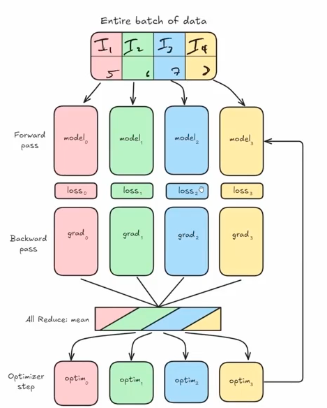
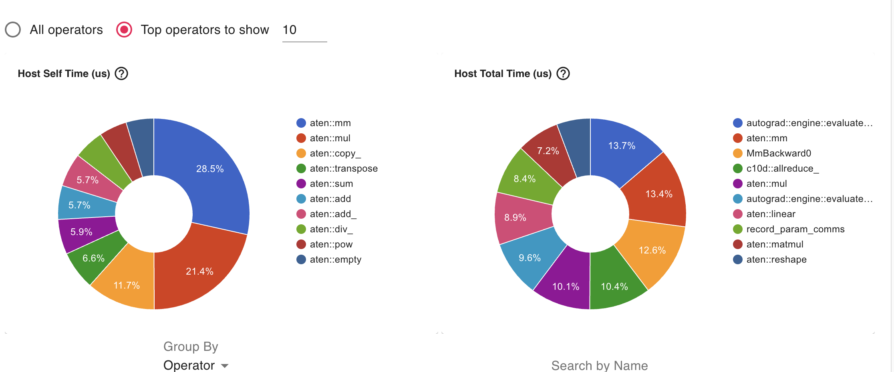
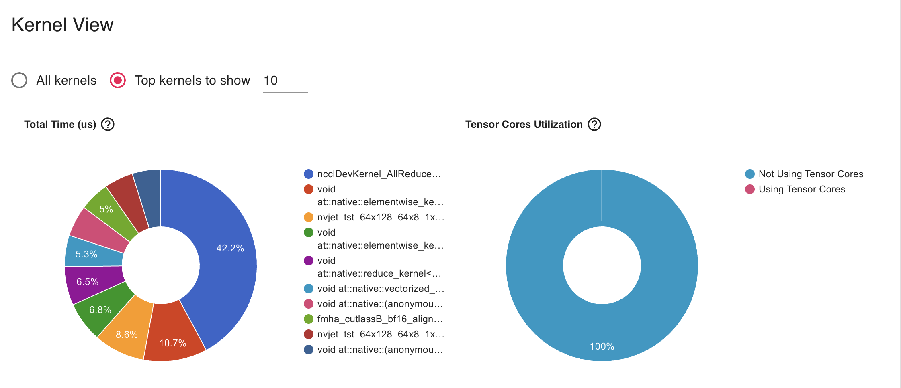

Introduction
Welcome! In this blog, we’ll explore Distributed Data Parallelism (DDP), a powerful technique for training deep learning models faster by using multiple GPUs. If you’ve ever trained a large model and wished it could go faster, DDP is one of the best tools to achieve that speedup.
Don’t worry if you’re new to distributed training - we’ll break everything down step by step, starting from the core concepts and building up to a working implementation of Pytorch’s DistributedDataParallel
What is Distributed Data Parallelism?
Before diving into the code, let’s understand the fundamental concept. In distributed training, device refers to GPU and host refers to CPU.
The Core Idea
Imagine you’re a teacher grading 100 homework assignments. You could
- Option A: Grade all 100 assignments yourself (slow!)
- Option B: Split the assignments among 4 teaching assistants, each grades 25 assignments (4x faster!)
In the First Phase, Distributed Data Parallel begins with the entire batch of data being divided into equal partitions across devices. Each partition is processed independently by identical model replicas running on separate GPUs, with each performing its own forward pass computation. Following the forward pass, each model calculates its own loss value based solely on its data partition, which then initiates the backward pass where gradients are computed independently on each device.
After local gradient computation, DDP executes its most critical operation—the all-reduce synchronization—where gradients from all devices are averaged, ensuring each model receives the same update signal as if it had processed the entire batch. With synchronized gradients in hand, each model’s optimizer applies identical parameter updates, maintaining perfect weight consistency across all replicas. This coordinated update completes one training iteration, and the process repeats with new data partitions in the next step, preserving model equivalence throughout training. To illustrate the DDP process I have attached a diagram below. I borrowed it from Zach’s Scratch to Scale cohort and one of the best diagrams I’ve ever seen on DDP

Distributed Data Parallel delivers remarkable efficiency through its balanced approach to parallelism, offering near-linear scaling with increasing GPU count while maintaining mathematical equivalence to single-GPU training. The communication overhead is minimized by exchanging only gradients rather than activations or weights, utilizing highly optimized all-reduce operations that leverage ring-based algorithms. DDP’s elegant simplicity makes it the preferred parallelization strategy for most deep learning tasks, providing substantial speedups without the complexity of model parallelism approaches.
Key Points:
- We DON’T split the model across GPUs (the model stays whole)
- We DO split the training data across GPUs
- Each GPU has a complete copy of the model
- Each GPU processes a different subset of data
- At the end of each step, we average the gradients from all GPUs
The Math Behind It
Given n GPUs, here’s what happens:
B_i = B/n → Each GPU gets a mini-batch of size B/n
g = (1/n) Σ g_i → Gradients from all GPUs are averaged
θ_i = θ_i - g → Each GPU updates its model using the averaged gradientIn plain English: 1. Split your batch of data across all GPUs 2. Each GPU computes gradients on its portion 3. Average all the gradients together 4. Update the model parameters on each GPU
The beauty of DDP is that it only requires one communication step - the gradient averaging. This makes it very efficient!
Setting Up the Environment
Auto-imported Variables
The environment automatically provides: - rank - The ID of the current process (0 or 1) - world_size - Total number of processes (2 in this case) - gpu_id - The specific GPU assigned to this process - device - The PyTorch device object for this GPU
The get() Utility
We have introduced a handy utility function get() for accessing distributed information:
get("ws") # → world_size (number of GPUs)
get("rank") # → current process rank
get("grank") # → global rank
get("lrank") # → local rankTo understand get, we need to dig into cache_mesh Class - A Function Decorator with State.
class cache_mesh:
def __init__(self, func):
self.func = func # Store the decorated function
self._mesh = None # Initialize mesh cache as None
def __call__(self, str, dm: dist.device_mesh.DeviceMesh = None):
mesh = self._mesh if dm is None else dm # If no device mesh (dm) is provided, it uses the cached mesh (self._mesh)
return self.func(str, mesh) # It calls the original function with the string argument and the determined mesh
def register_mesh(self, mesh: dist.device_mesh.DeviceMesh):
self._mesh = mesh
return selfNow we are going to declare the get function is decorated with @cache_mesh, transforming it into an instance of the cache_mesh class. This allows it to use a cached device mesh when none is provided.
@cache_mesh
def get(str, dm: dist.device_mesh.DeviceMesh = None):
"""
Applies a func to get whatever is requested.
`ws` -> dist.get_world_size(pg)
`pg` -> dist.get_process_group()
`rank` -> dist.get_rank(pg) # global
`grank` -> dist.get_rank(pg) # global
`lrank` -> local_rank
"""
pg = dm.get_group() if dm else None
match str:
case "ws":
return dist.get_world_size(pg)
case "pg":
return pg
case "rank" | "grank":
return dist.get_rank(pg)
case "lrank":
return dm.get_local_rank() if dm else int(os.environ.get("LOCAL_RANK", 0))
case _:
raise ValueError(f"Invalid string: {str}")Here is an example of how to use it in practice
# In setup code, register a mesh once
device_mesh = dist.DeviceMesh("cuda", [[0, 1, 2, 3]]) # Create a mesh with 4 GPUs
get.register_mesh(device_mesh)
# Later, easily access distributed info without passing the mesh each time
world_size = get("ws") # Uses cached mesh
my_rank = get("rank") # Uses cached mesh
local_rank = get("lrank") # Uses cached mesh
# Or override with a specific mesh when needed
specific_mesh = dist.DeviceMesh("cuda", [[0, 1]])
other_world_size = get("ws", specific_mesh) # Uses specific meshAlternatively, we can use nbdistributed [plugin] (https://muellerzr.github.io/scratch-to-scale/01_intro_to_jupyter.html ) and then
%load_ext nbdistributed%dist_init --num-processes 2 --gpu-ids 1,2This creates: - Rank 0 → Worker on GPU 1 - Rank 1 → Worker on GPU 2
Each “rank” is essentially a separate process handling one GPU.
Building DDP from Scratch
Now comes the exciting part - implementing DDP ourselves to understand how it works!
Step 1: The Constructor - Ensuring Model Synchronization
The first challenge: we need to ensure all GPUs start with the exact same model. If they don’t, the training will diverge and produce incorrect results.
class SimpleDistributedDataParallelism:
def __init__(self, model: torch.nn.Module):
self.model = model
# Verify all GPUs have identical model parameters
for param in model.parameters():
rank0_param = param.data.clone()
dist.broadcast(rank0_param, src=0) # Broadcast from rank 0
if not torch.equal(param.data, rank0_param):
raise ValueError(
"Expected model parameters to be identical during `__init__`, "
"but this is not true. Make sure to set the seeds before creating your model"
)What’s happening here?
- For each parameter in the model:
- Rank 0 broadcasts its parameter value to all other ranks
- Each rank compares its local parameter to rank 0’s parameter
- If there’s any mismatch, we raise an error
- Why do we need this?
- Random initialization could give different starting weights on each GPU
- Solution: Set the same random seed on all GPUs before creating the model
Testing the verification:
The notebook demonstrates this by intentionally setting different seeds:
%%rank [0]
set_seed(43) # Rank 0 uses seed 43
# Rank 1 still uses default seed
# Result: ValueError when trying to create DDP model!After fixing by setting the same seed on all ranks:
set_seed(43) # Same seed on all ranks
model = SimpleDistributedDataParallelism(model) # Success!Step 2: Adding Forward Pass Methods
We need to make our wrapper behave like a normal PyTorch model:
def __call__(self, *args, **kwargs):
return self.model(*args, **kwargs)
def train(self):
self.model.train()
def eval(self):
self.model.eval()These methods simply delegate to the wrapped model, making our DDP class transparent to use.
Step 3: The Heart of DDP - Gradient Synchronization
This is where the magic happens! After computing gradients on each GPU’s subset of data, we need to average them across all GPUs.
The Problem Without Synchronization:
The notebook shows what happens if we train without syncing:
# Each GPU processes different data
item = dataset[get("rank")] # Rank 0 gets item 0, Rank 1 gets item 1
# Train without syncing
output = model(**item)
output.loss.backward()
optimizer.step()
# Check if parameters match across GPUs
# Result: ValueError - parameters are different!
# Max difference: 0.00390625The GPUs diverged because they updated their models differently!
The Solution - sync_gradients() Method:
def sync_gradients(self):
"""
Should be called after the backward pass.
Averages gradients across all GPUs.
"""
for param in self.model.parameters():
if param.grad is not None:
# Sum gradients from all GPUs
dist.all_reduce(param.grad, op=dist.ReduceOp.SUM)
# Divide by number of GPUs to get average
param.grad /= dist.get_world_size()How it works:
dist.all_reduce()- A collective communication operation that:- Gathers the gradient tensor from all GPUs
- Applies an operation (SUM in our case)
- Returns the result to all GPUs
We divide by
world_sizeto convert the sum into an averageAfter this, all GPUs have the same averaged gradient and will update identically
The Corrected Training Loop:
output = model(**item)
output.loss.backward()
ddp_model.sync_gradients() # Critical step!
optimizer.step()
optimizer.zero_grad()
# Verify parameters match across GPUs
# Result: Success - all parameters identical!Putting It All Together: Performance Comparison
Here is how a simple DDP class looks like
class SimpleDistributedDataParallelism:
def __init__(self, model:torch.nn.Module):
self.model = model
for param in model.parameters():
rank0_param = param.data.clone()
dist.broadcast(rank0_param, src=0)
if not torch.equal(param.data, rank0_param):
raise ValueError(
"Expected model parameters to be identical during `__init__`, but this is not true. "
"Make sure to set the seeds before creating your model"
)
def sync_gradients(self):
"""
Should be called before the backward pass, iterates
through all params, and:
1. Check if it is `None` (not trainable)
2. If trainable, will perform an `all_reduce` using `SUM`
(aka: take the global average of all grads)
"""
for param in self.model.parameters():
if param.grad is not None:
dist.all_reduce(param.grad, op=dist.ReduceOp.SUM)
param.grad /= dist.get_world_size()
def __call__(self, *args, **kwargs):
return self.model(*args, **kwargs)
def train(self):
self.model.train()
def eval(self):
self.model.eval()Now let’s see the speedup in action!
Single GPU Baseline
Training on a single GPU (Rank 0 only):
per_device_batch_size = 16 # Batch size of 16
# Results:
# Total training time: 1.58 seconds
# Average time per batch: 0.0751 secondsDDP with 2 GPUs
Now let’s distribute the training:
Data Sharding: Split the dataset across GPUs
ds_length_per_rank = len(dataset) // world_size rank = get("rank") start = rank * ds_length_per_rank end = start + ds_length_per_rank train_shard = dataset.select(range(start, end))Smaller per-device batch size: Since we’re using 2 GPUs
per_device_batch_size = 8 # 8 per GPU = 16 total (same as single GPU)Results:
Rank 0: 1.13 seconds, 0.0540 seconds/batch Rank 1: 1.16 seconds, 0.0551 seconds/batch
Key Insight
With 2 GPUs, we can train with an effective global batch size of 16 (8 per GPU) in approximately the same time it took to train with batch size 8 on a single GPU!
This means: - We effectively doubled our throughput - The communication overhead (gradient averaging) is minimal - We could even increase to a global batch size of 32 (16 per GPU) for even faster training
Advanced Feature: Gradient Accumulation
Sometimes you want to train with a very large batch size, but it won’t fit in GPU memory. The solution is gradient accumulation - accumulate gradients over multiple micro-batches before updating.
The Challenge with DDP
With gradient accumulation, we don’t want to sync gradients after every micro-batch - that would be wasteful! We only want to sync when we’re ready to actually update the model.
The Solution: Conditional Syncing
class SimpleDistributedDataParallelism:
def __init__(self, model: torch.nn.Module):
self.model = model
self.enable_grad_sync() # Start with syncing enabled
# ... (initialization code)
def sync_gradients(self):
if not self.do_sync:
return # Skip syncing if disabled
# ... (sync code)
def enable_grad_sync(self):
self._do_sync = True
def disable_grad_sync(self):
self._do_sync = False
@contextmanager
def no_sync(self):
"""Context manager to temporarily disable gradient syncing."""
prev = self.do_sync
self.disable_grad_sync()
try:
yield
finally:
self._do_sync = prevUsing Gradient Accumulation
grad_accum_steps = 4 # Accumulate over 4 micro-batches
for i, batch in enumerate(dataloader):
# Only sync on the last accumulation step
if i % grad_accum_steps == 0:
ddp_model.enable_grad_sync()
else:
ddp_model.disable_grad_sync()
output = ddp_model(batch)
output.loss.backward()
# Only update when syncing is enabled
if ddp_model.do_sync:
ddp_model.sync_gradients()
optimizer.step()
optimizer.zero_grad()This way, we only communicate gradients every 4 steps instead of every step, reducing communication overhead!
Dataset Characteristics
For dataset, we used GLUE MRPC Dataset. Here is a brief description of the dataset
- Task Type: Sentence pair classification (paraphrase identification)
- Description: The MRPC dataset contains pairs of sentences automatically extracted from online news sources with human annotations indicating whether they are semantically equivalent (paraphrases) or not
- Size:
- Training set: 3,668 sentence pairs
- Validation set: 408 sentence pairs
- Test set: 1,725 sentence pairs
- Labels: Binary classification
- 0: not_equivalent
- 1: equivalent
Here’s an example from the dataset:
{
'idx': 0,
'label': 1,
'sentence1': 'Amrozi accused his brother, whom he called "the witness", of deliberately distorting his evidence.',
'sentence2': 'Referring to him as only "the witness", Amrozi accused his brother of deliberately distorting his evidence.'
}For model, we used a small 360M HuggingFaceTB/SmolLM2-360M-Instruct model.
Profiling
We used torch.profiler to check traces, kernel and memory footprint . We ran the distributed module using a 4 H100 SXM5 GPU instatance in LambdaLab.




Key Observations
- Very low GPU utilization (15.19%) - This is extremely low for H100 GPUs, indicating significant inefficiency
- SM Efficiency (11.08%) - This suggests your kernels aren’t fully utilizing the streaming multiprocessors
- Occupancy (28.73%) - The low occupancy indicates your kernels aren’t keeping the GPU busy
- CPU Execution dominates (61.1%) of the step time
- Kernel execution (15.2%) is relatively small
- Communication overhead (20.9%) is significant but expected in DDP
Bottlenecks and Solutions
- The AllReduce operation (42.2%) dominates kernel time, which is expected in DDP but appears to be taking too much relative time
- Solution: Gradient Accumulation
- Unused Tensorcore as we see it in the Profiler
- Solution: Mixed Precision Training to enable tensorcore
- We can try to Increase batch size until memory limits to increase throughput
We have experimented with Gradient Accumulation with step size 2 and AllReduce operation reduced to 25% in Kermel profiler.

Code Walkthrough
1. Imports and Setup (Lines 1-14)
import torch
import torch.distributed as dist
from accelerate import PartialStateWhat’s happening: - torch: The main PyTorch library for deep learning - torch.distributed (dist): PyTorch’s library for distributed training across multiple devices - PartialState: A helper from the Accelerate library that manages which GPU each process should use
state = PartialState()
device = state.device
set_seed(42)What’s happening: - PartialState() automatically figures out which GPU this process should use - device stores the assigned GPU - set_seed(42) ensures reproducibility - all processes start with the same random state
2. The SimpleDistributedDataParallelism Class (Lines 16-42)
This is the heart of the code! It shows how DDP works under the hood.
Initialization (init, Lines 17-27)
def __init__(self, model:torch.nn.Module):
self.model = model
for param in model.parameters():
rank0_param = param.data.clone()
dist.broadcast(rank0_param, src=0)
if not torch.equal(param.data, rank0_param):
raise ValueError(...)What’s happening:
- Takes a model as input and stores it
- Broadcasts parameters from GPU 0 to all other GPUs:
- In distributed training, each GPU (called a “rank”) has its own copy of the model
- “Broadcasting” means copying data from one GPU to all others
- This ensures all GPUs start with identical model weights
- Verification check: If any GPU has different parameters, raise an error
Why this matters: All GPUs must start with the exact same model, or they’ll learn different things!
Gradient Synchronization (Lines 29-33)
def sync_gradients(self):
for param in self.model.parameters():
if param.grad is not None:
dist.all_reduce(param.grad, op=dist.ReduceOp.SUM)
param.grad /= dist.get_world_size()What’s happening:
This is THE KEY operation in DDP! Let me explain with an example:
Imagine you have 2 GPUs: - GPU 0 processes batch A and calculates gradient = [1, 2, 3] - GPU 1 processes batch B and calculates gradient = [4, 5, 6]
After all_reduce with SUM operation: - Both GPUs now have gradient = [5, 7, 9] (sum of both)
After dividing by world_size (2): - Both GPUs have gradient = [2.5, 3.5, 4.5] (average)
Why averaging? This is equivalent to processing both batches on a single GPU! The gradient is the average across all data processed by all GPUs.
Helper Methods (Lines 35-42)
def __call__(self, *args, **kwargs):
return self.model(*args, **kwargs)
def train(self):
self.model.train()
def eval(self):
self.model.eval()What’s happening: These methods allow our wrapper to behave like a regular PyTorch model.
3. Data Preparation (Lines 44-68)
dataset = get_dataset()["train"]
train_ds = dataset.shuffle(seed=42)What’s happening: - Load the training dataset - Shuffle it with a fixed seed so all GPUs shuffle the same way
def collate_func(batch):
return tokenizer.pad(
batch,
padding="longest",
pad_to_multiple_of=8,
return_tensors="pt",
)What’s happening: - This function prepares batches of text data - It pads sequences to the same length (needed for batch processing) - Pads to multiples of 8 (optimization for GPU efficiency)
4. Data Sharding - The Critical Part! (Lines 87-98)
# Shard data for first parallel dimension
ds_length = len(train_ds)
ds_length_per_rank = ds_length // get("ws") # ws = world_size
rank = get("rank")
start = rank * ds_length_per_rank
end = start + ds_length_per_rank if rank != get("ws") - 1 else ds_length
train_shard = train_ds.select(list(range(start, end)))What’s happening:
This splits the dataset into separate chunks for each GPU!
Example with 1000 samples and 4 GPUs: - Total samples: 1000 - Samples per GPU: 1000 / 4 = 250 - GPU 0 (rank 0): samples 0-249 - GPU 1 (rank 1): samples 250-499 - GPU 2 (rank 2): samples 500-749 - GPU 3 (rank 3): samples 750-999
Why this matters: Each GPU only loads and processes its own portion of data, so they work on different examples simultaneously!
5. Model Setup (Lines 109-112)
model = get_smol_model()
model.to(device)
optimizer = torch.optim.SGD(model.model.parameters(), lr=1e-3)
model = SimpleDistributedDataParallelism(model)What’s happening: 1. Create the model 2. Move it to the assigned GPU 3. Create an optimizer (SGD with learning rate 0.001) 4. Wrap the model with our DDP wrapper
6. Profiler Setup (Lines 114-136)
if state.is_main_process:
profiler_context = profile(...)What’s happening: - Only the main process (GPU 0) runs the profiler - The profiler tracks performance metrics like memory usage and computation time - Results are saved to “ddp_trace” folder for analysis with TensorBoard
Why only main process? To avoid multiple GPUs writing the same profiling data and causing conflicts.
Understanding the Profiler Schedule
profiler_schedule = schedule(
skip_first=5,
wait=1,
warmup=2,
active=5,
repeat=1
)What’s happening:
The profiler schedule controls WHEN the profiler collects data. It doesn’t run on every iteration because profiling adds overhead and generates large trace files. The schedule has four phases that cycle through iterations:
- skip_first=5: Skip the first 5 iterations completely (no profiling)
- Why? The first few iterations are often slower due to initialization and GPU warm-up
- Skipping them gives more accurate performance measurements
- wait=1: Wait for 1 iteration without profiling
- This is a “rest” phase between profiling cycles
- Allows the system to stabilize before starting to profile again
- warmup=2: Run for 2 iterations collecting basic profiling data
- This is a “warm-up” phase where the profiler starts but doesn’t record everything yet
- Helps the profiler itself initialize properly
- active=5: Actively profile for 5 iterations with full data collection
- This is when the profiler records detailed performance data
- Captures CPU usage, GPU usage, memory allocations, and operation timing
- repeat=1: Repeat the cycle (wait → warmup → active) 1 time
- After the first cycle completes, it runs one more cycle
- Total cycles = initial + repeat = 2 cycles
Timeline example for 20 iterations:
Iterations 0-4: SKIP (skip_first=5)
Iteration 5: WAIT (wait=1)
Iterations 6-7: WARMUP (warmup=2)
Iterations 8-12: ACTIVE - recording data! (active=5)
Iteration 13: WAIT (wait=1)
Iterations 14-15: WARMUP (warmup=2)
Iterations 16-20: ACTIVE - recording data! (active=5)Understanding the Profile Configuration
profiler_context = profile(
activities=[ProfilerActivity.CPU, ProfilerActivity.CUDA],
schedule=profiler_schedule,
on_trace_ready=torch.profiler.tensorboard_trace_handler("ddp_trace"),
record_shapes=True,
profile_memory=True,
with_stack=True,
with_flops=True
)What each parameter means:
- activities=[ProfilerActivity.CPU, ProfilerActivity.CUDA]
- Track both CPU and GPU (CUDA) operations
- Shows where time is spent on both devices
- schedule=profiler_schedule
- Use the schedule defined above to control when profiling happens
- on_trace_ready=torch.profiler.tensorboard_trace_handler(“ddp_trace”)
- When profiling data is ready, save it to the “ddp_trace” folder
- Can be visualized with TensorBoard using:
tensorboard --logdir=ddp_trace
- record_shapes=True
- Record the shapes of tensors (e.g., [batch_size, sequence_length, hidden_size])
- Helps identify operations working on large tensors that might be slow
- profile_memory=True
- Track memory allocations and deallocations
- Shows which operations use the most GPU memory
- Helps identify memory bottlenecks or leaks
- with_stack=True
- Record the Python call stack for each operation
- Shows which line of code triggered each operation
- Makes it easier to find performance bottlenecks in your code
- with_flops=True
- Estimate floating-point operations (FLOPs) for each operation
- Helps understand computational intensity
- Higher FLOPs = more computation work
Why this matters: Profiling helps you understand where your training time is spent. You can identify if you’re bottlenecked by data loading, forward pass, backward pass, or gradient synchronization!
Visualizing Profiler Data with TensorBoard (Remote Setup)
Since your code is running on Lambda Labs (remote GPU server) and you’re accessing it from your MacBook via VSCode, here’s how to visualize the profiler traces:
Step 1: Run the DDP Training Script on Lambda Labs
First, execute your training script on the Lambda Labs instance. This will generate the profiler trace files:
# On Lambda Labs (via VSCode terminal)
python ddp.pyAfter the script completes, you should see a ddp_trace folder created with trace files inside.
Step 2: Install TensorBoard (if not already installed)
On your Lambda Labs instance:
pip install tensorboardStep 3: Launch TensorBoard on Lambda Labs
Start TensorBoard on the remote server:
tensorboard --logdir=ddp_trace --port=6006This will output something like:
TensorBoard 2.x.x at http://localhost:6006/Important: Keep this terminal running! Don’t close it.
Step 4: Port Forwarding via VSCode (Easy Method)
VSCode makes port forwarding super easy!
Option A: Automatic Port Forwarding (Recommended)
- VSCode should automatically detect that port 6006 is being used
- Look for a notification in the bottom-right corner saying “Port 6006 is available”
- Click “Open in Browser” or “Forward Port”
Option B: Manual Port Forwarding
- In VSCode, press
Cmd+Shift+P(on Mac) to open the Command Palette - Type “Forward a Port” and select it
- Enter port number:
6006 - Press Enter
You should see the forwarded port appear in the “PORTS” panel at the bottom of VSCode.
Step 5: Open TensorBoard in Your MacBook Browser
Once the port is forwarded, open your web browser on your MacBook and go to:
http://localhost:6006You should see the TensorBoard interface!
Step 6: Navigate to the Profiler Tab
In TensorBoard: 1. Click on the “PYTORCH_PROFILER” or “PROFILE” tab at the top 2. You’ll see a dropdown to select which trace file to view 3. Select the trace file you want to analyze
What You’ll See in TensorBoard:
The profiler visualization shows several views:
- Overview Page:
- Performance summary
- GPU utilization over time
- Step time breakdown (how long each training iteration took)
- Operator View:
- Shows which PyTorch operations took the most time
- See operations like
matmul,conv2d,all_reduce, etc. - Sorted by execution time
- Kernel View:
- Low-level GPU kernel performance
- Shows actual CUDA kernels that ran on the GPU
- Trace View:
- Timeline visualization
- Shows when each operation executed
- You can zoom in to see individual operations
- Look for the
sync_gradssection - this shows the time spent on gradient synchronization!
- Memory View:
- Memory allocation over time
- Helps identify memory leaks or spikes
Tips for Analysis:
- Look for the “sync_grads” operations in the trace view - this is your DDP gradient synchronization time
- Compare “forward”, “backward”, and “sync_grads” times - ideally, sync time should be small compared to computation
- Check GPU utilization - you want this close to 100% during training
- Identify bottlenecks - if data loading takes longer than forward/backward, you need faster data loading
Alternative: Using SSH Tunnel (Manual Method)
If VSCode port forwarding doesn’t work, you can use SSH tunneling:
# On your MacBook terminal (not VSCode)
ssh -L 6006:localhost:6006 username@lambda-labs-ip-addressThen access http://localhost:6006 in your browser.
Troubleshooting:
- Port already in use? Change the port:
tensorboard --logdir=ddp_trace --port=6007 - Can’t see traces? Make sure the
ddp_tracefolder exists and contains.pt.trace.jsonfiles - Port forwarding not working? Try restarting VSCode or manually set up SSH tunnel
- No data in TensorBoard? The profiler only collects data during “active” iterations (8-12 and 16-20 in this code)
7. The Training Loop (Lines 138-161)
This is where everything comes together!
for (i, batch) in enumerate(train_dataloader):
if i > 20:
breakWhat’s happening: Loop through batches, stopping after 20 iterations (for demonstration).
Step 1: Move Data to GPU (Lines 143-144)
with record_function("data_movement"):
batch = {k: v.to(device) for k, v in batch.items()}What’s happening: Transfer the batch from CPU memory to GPU memory.
Step 2: Forward Pass (Lines 146-147)
with record_function("forward"):
output = model(**batch)What’s happening: - Run the model on the input data - Each GPU processes its own batch independently - Calculate predictions and loss
Step 3: Backward Pass (Lines 148-149)
with record_function("backward"):
output.loss.backward()What’s happening: - Calculate gradients using backpropagation - Each GPU calculates gradients based on its own batch - At this point, gradients are still different on each GPU!
Step 4: Synchronize Gradients (Lines 151-152)
with record_function("sync_grads"):
model.sync_gradients()What’s happening: - THIS IS THE MAGIC! - All GPUs communicate and average their gradients - After this step, all GPUs have identical gradients - This makes it as if we processed all batches on a single GPU
Step 5: Update Model (Lines 154-158)
with record_function("opt_step"):
optimizer.step()
optimizer.zero_grad()What’s happening: 1. Update model parameters using the averaged gradients 2. Reset gradients to zero for the next iteration 3. Since all GPUs have the same gradients, they all update identically 4. Models stay synchronized!
8. Cleanup (Lines 160-163)
if profiler_context:
profiler_context.__exit__(None, None, None)
dist.destroy_process_group()What’s happening: - Close the profiler - Destroy the process group (disconnect GPUs from each other)
The Big Picture: How DDP Works
The DDP Workflow
- Initialization: All GPUs start with identical model copies
- Data Sharding: Each GPU gets a different subset of the training data
- Independent Forward/Backward: Each GPU processes its own data independently
- Gradient Synchronization: GPUs communicate and average their gradients
- Synchronized Update: All GPUs update their models identically
- Repeat: Back to step 3 for the next batch
Why DDP is Powerful
Speed: With N GPUs, you process N times more data per iteration!
Example: - Single GPU: Process 8 samples per iteration - 4 GPUs with DDP: Process 32 samples per iteration (8 per GPU) - This is like having a batch size of 32, but the memory usage per GPU is only for batch size 8!
Equivalence to Single GPU: DDP is mathematically equivalent to training on a single GPU with a larger batch size, because: - You process more samples total (N times more) - Gradients are averaged across all samples - Model updates are based on the averaged gradient
Key Concepts Recap
- Rank: The ID of each GPU (0, 1, 2, …)
- World Size: Total number of GPUs
- Broadcast: Copy data from one GPU to all others
- All-Reduce: Combine data from all GPUs (sum, average, etc.)
- Data Sharding: Split dataset so each GPU gets different samples
- Gradient Synchronization: Average gradients across all GPUs
Summary
This code demonstrates a simplified version of PyTorch’s Distributed Data Parallelism. The key insight is:
Each GPU works on different data independently, but they synchronize their gradients after backpropagation, ensuring all GPUs learn the same model together.
By splitting the work across multiple GPUs, you can train models much faster without changing the final result!